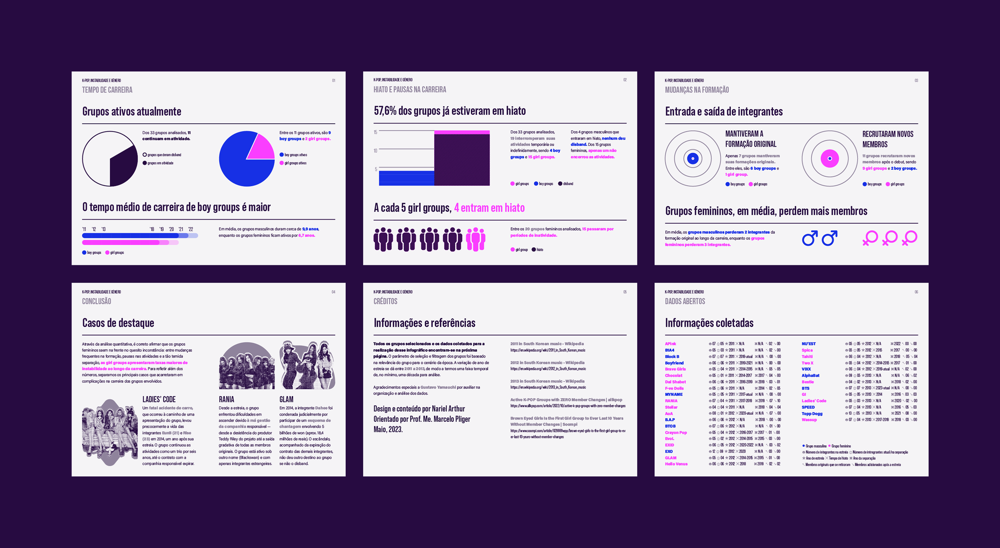
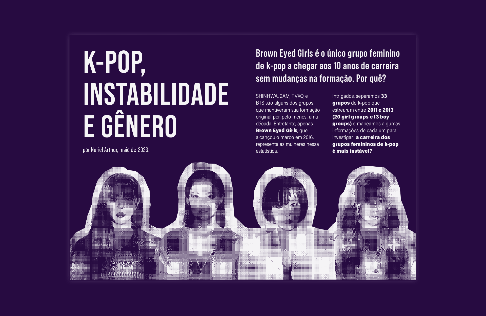
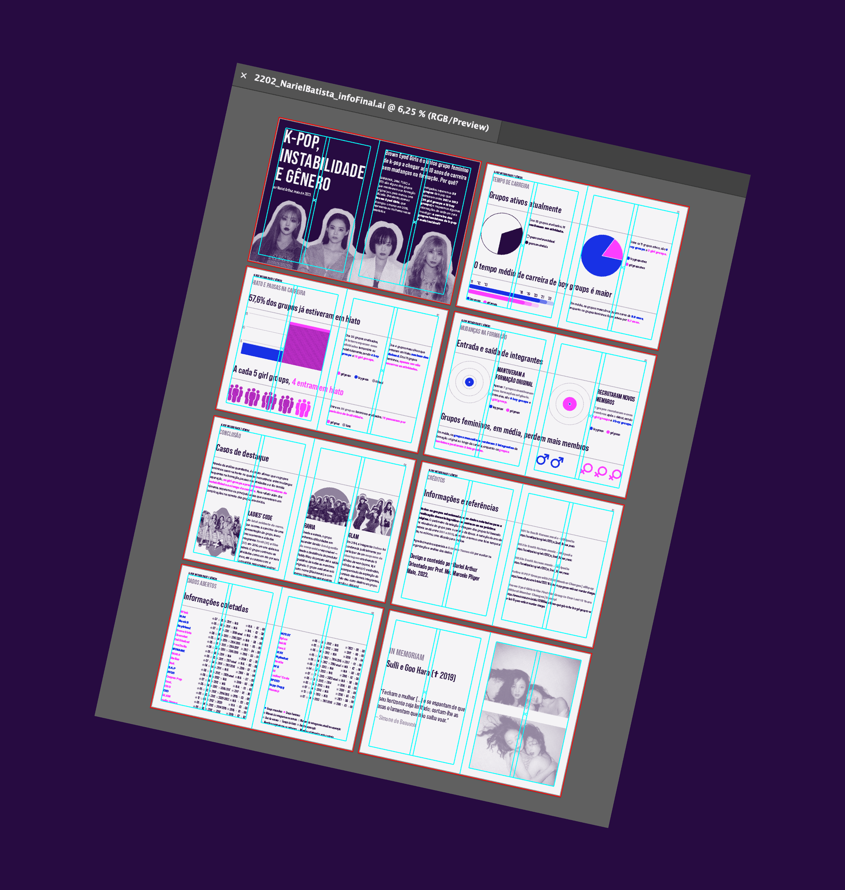
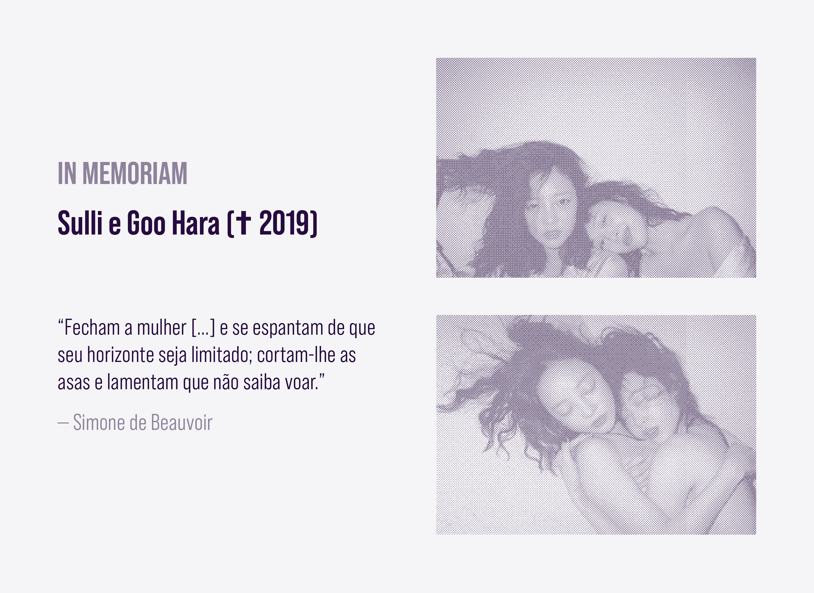
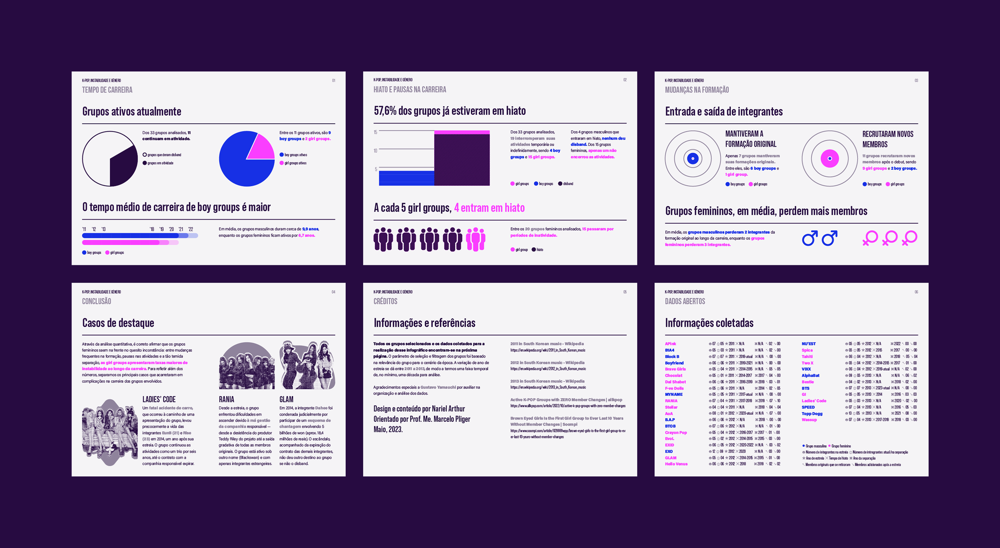
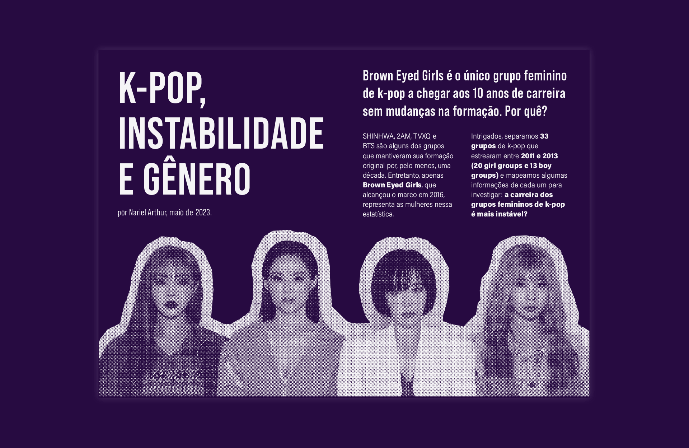
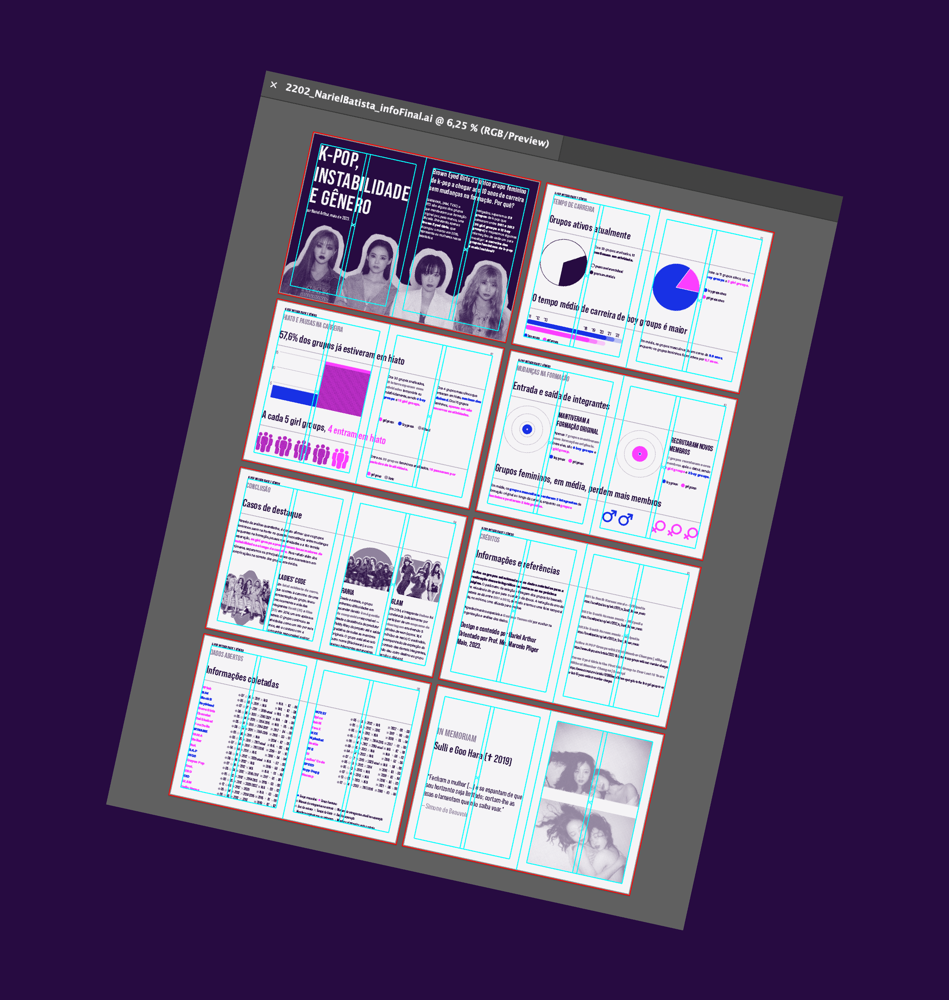
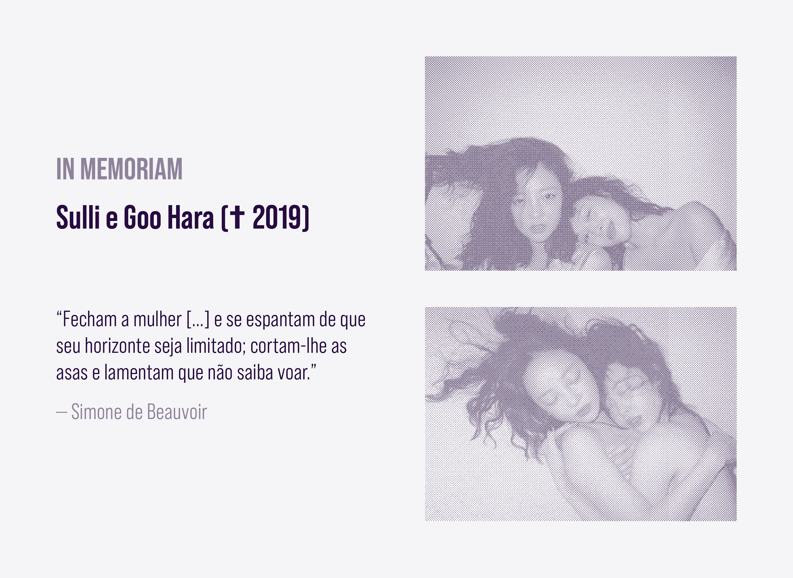

Academic infographic work that investigates the relation between girl groups and inconsistencies throughout the career. The collected data is about the life time, lineup changes and hiatus of 33 groups that debuted between 2011 and 2013.
The visual identity is clean and serious, while key elements bring up k-pop's modernity and dynamism (such as the vibrant colors, digital collage and halftone effect on pictures).
The infographic was created during Digital Graphic Design graduation program.
K-POP, INSTABILIDADE E GÊNERO
🇧🇷 Trabalho acadêmico de infografia que investiga a relação entre grupos femininos e inconstâncias ao longo da carreira. Foram coletados dados acerca do tempo de vida, rotatividade de membros e pausas de 33 grupos que debutaram entre 2011 e 2013.
A identidade é limpa e busca transmitir seriedade, enquanto elementos chave resgatam a modernidade e dinamismo presentes no k-pop (como as cores vibrantes, o recorte digital e o efeito halftone nas fotografias).
O trabalho foi desenvolvido durante o curso de pós-graduação em Design Gráfico e Digital no Senac São Paulo.
MAY, 2023.
 






